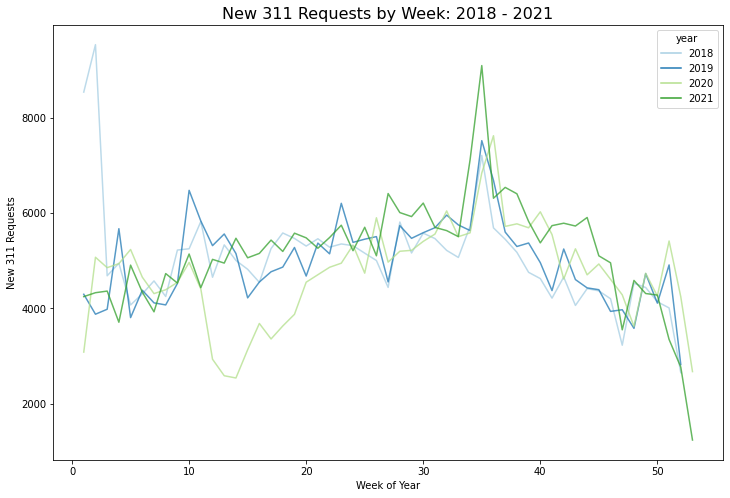
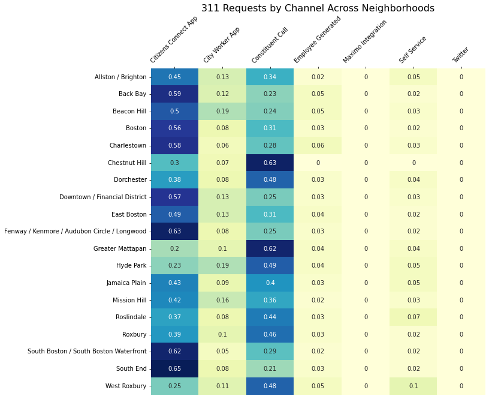
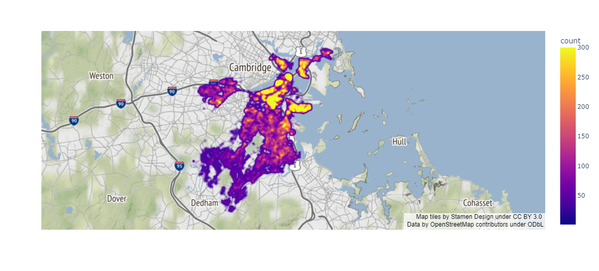

Chapter 3 Exploratory Data Analysis
3.1 Longitudinal Analysis
We first examine the time trend of the request number in four years. The graph below shows a seasonality trend in each year, where it increases first, peaks in summer season, then decreases. We can also notice that there is a sharp drop in request number in week 10 to week 15 of 2020. A possible explanation would be the start of Covid-19 which leads citizens to stay at home and make less requests.
3.2 Distribution Analysis
311 Requests by Different Channels across Neighborhood
There are six channels where citizens could use to report their requests. After grouping the requests by neighborhoods, Heatmap is used to show the distribution of number of requests from different channels. The graph shows that there are slightly difference in the distribution of channels of different neighborhoods. Though the most commonly used channels are citizens connect APP and 311 phone calls, some neighborhoods (e.g. Back Bay, South Boston/ South Boston Waterfront) use APP more often, but some neighborhoods (e.g. Chestnut Hill, Greater Mattapan) use phone call more often.

311 Report Request Number in Different Neighborhood
